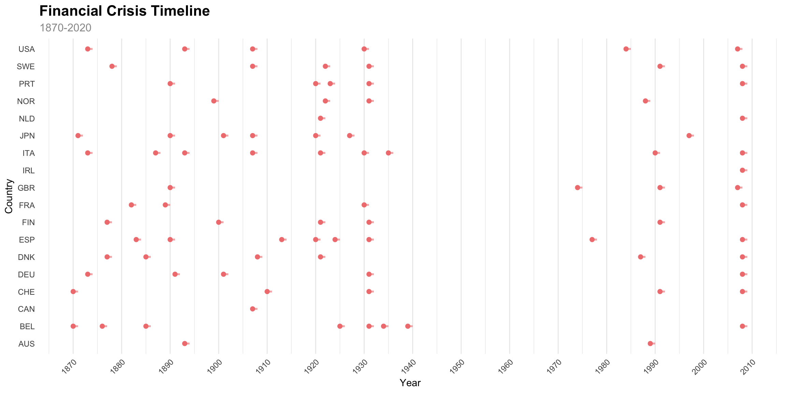

Evidence & Context
Strategy Verdicts and Long-Run Historical Evidence
Why Document Negative Results?
Negative results are as valuable as positive ones. A strategy that fails the falsification framework teaches us:
- Which signals are disguised beta (market exposure dressed up as alpha)
- Which intuitions about markets are wrong (or at least not tradeable)
- Where the boundary lies between genuine alpha and noise
Publication bias in finance means failed strategies are rarely documented. This page corrects that.
Failed Strategies
Avoid Worst Days (VIX Protection)
Verdict: Pure market beta (R² = 41%)
What it does: Exit to cash when yesterday’s VIX > 30 or yesterday’s absolute return > 3%. Re-enter when VIX < 25 and 5-day cooloff expires. All signals use t-1 (previous day) values.
Why it fails:
- The strategy is essentially a crude vol-timing filter on SPY
- When VIX is high, you’re out of the market — but so is the VIX signal embedded in the market itself
- The 41% R² means the strategy’s returns are 41% explained by Mkt-RF (market factor alone)
- Alpha = -1% per year: the strategy destroys value relative to just holding the market
- The t+1 execution constraint is critical: the pre-fix version (using same-day VIX) showed 18.4% CAGR; honest t+1 execution drops it to 5.3%
Key lesson: VIX is not a leading indicator — it’s a concurrent indicator. By the time VIX > 30, the worst days have already happened.
What we learned: Any strategy that triggers on elevated VIX is timing exits AFTER the crash, not before it. The worst days and best days cluster together (median 5 calendar days apart). You cannot avoid one without missing the other. See the temporal clustering analysis.
Risk State Classification (VIX Overlay)
Verdict: Pure market beta (R² = 88%)
What it does: Three-signal design: VVIX (vol-of-vol) as early warning, VIX term structure 5-day change, VIX term structure level. Market-specific percentile thresholds from training data only. Overlay on SPY: reduce exposure when signals are elevated.
Why it fails:
- 88% R² — this is almost entirely market beta
- Alpha = -1% per year (negative): the overlay HURTS performance
- Despite using VVIX (which IS an early warning — it rises before VIX spikes), the signal doesn’t translate into tradeable alpha
- The 5-day change in term structure adds noise, not signal
- Percentile thresholds from training data don’t generalise: crisis regimes are structurally different from calm regimes
Key lesson: Adding more VIX-derived signals doesn’t help. VVIX, term structure, and VIX level are all highly correlated. Three correlated signals ≈ one signal with more noise.
What we learned: Implied volatility signals (VIX, VVIX, term structure) are priced in. The market already incorporates this information. A strategy based on these signals is, by construction, replicating what the market already does — hence the 88% R² with the market factor.
LTR Cross-Sectional Momentum (Borderline)
Verdict: Borderline (Alpha t = 1.99, R² = 7%)
What it does: XGBoost LambdaMART ranks ~500 US stocks monthly using 21 momentum/volatility features. Long top decile, short bottom decile.
Why it’s borderline:
- Alpha t = 1.99 — just below the 2.0 threshold
- R² = 7% — low factor exposure, which is good
- Alpha = 166% per year — suspiciously high
- The demo uses ~51 stocks (not the full US universe) which inflates returns
- Walk-forward from 2005 with annual retraining — but limited out-of-sample validation
Key lesson: The signal may be genuine but the implementation is too small-scale to confirm. Needs: full US universe (3000+ stocks), transaction costs for monthly L/S rebalancing, and multi-market replication.
What we learned: Cross-sectional momentum is well-documented academically. Our implementation is a proof-of-concept, not a production signal. The 166% annual alpha is an artifact of the small universe, not evidence of a genuine edge.
Pattern: What Predicts Failure?
Implications for Portfolio Construction
- Do not include Avoid Worst Days or Risk State in the multi-strategy portfolio (#52)
- VIX-based overlays add cost and complexity without alpha — use passive SPY instead
- Factor rotation (DRIF, Factor MAX) is where the genuine alpha lives
- Cross-sectional momentum (LTR) needs scaling before inclusion — promising but unconfirmed at production scale
References
- Full falsification methodology: Strategy Falsification
- Avoid Worst Days analysis: avoid-worst-days.html
- Strategy leaderboard: leaderboard.html
- Harvey, Liu & Zhu (2016). “…and the Cross-Section of Expected Returns”
Overview
The Jordà-Schularick-Taylor Macrohistory Database provides 150+ years of macroeconomic and financial data across 18 advanced economies, spanning 1870 to 2020. This tab analyzes the equity premium (equity total return minus short-term government bill rate) to test the cross-geography pervasiveness criterion from the Swedroe evidence-based investing framework.
Key findings:
- Equity premium is positive in 14 of 16 countries over the full sample (mean > 0, t-stat > 2, majority of years positive)
- USA equity premium from JST correlates with the Fama-French market factor (1926-2020 overlap period)
- Financial crises occurred in 18 countries, with total crisis-years ranging from 1 to 9 per country
Source: Òscar Jordà, Moritz Schularick, and Alan M. Taylor (2017). “Macrofinancial History and the New Business Cycle Facts.” In NBER Macroeconomics Annual 2016, volume 31, edited by Martin Eichenbaum and Jonathan A. Parker. Chicago: University of Chicago Press. DOI: 10.1086/690241
Cross-Geography Pervasiveness
The table below shows full-sample equity premium statistics by country, sorted by mean premium. A factor is considered pervasive if it has a positive mean premium, t-statistic > 2, and is positive in more than 50% of years.
Financial Crisis Timeline
Financial crises (identified by the JST crisisJST indicator) are shown below as segments spanning crisis years for each country.

Crisis Frequency Table
The table below shows the number of crisis years per country, sorted by total crisis-years.
Data Notes
- Equity premium = equity total return (
eq_tr) - short-term government bill rate (bill_rate) - Pervasiveness criteria: mean premium > 0, t-stat > 2, and positive in >50% of years
- Crisis indicator:
crisisJSTbinary flag (1 = crisis year) - Country coverage: 18 countries: AUS, BEL, CHE, DEU, DNK, ESP, FIN, FRA, GBR, ITA, JPN, NLD, NOR, PRT, SWE, USA
- Data period: 1870 to 2020 (2,718 country-year observations)
All target computations are defined in R/plan_jst.R.
[1] “historicaldata dev | Git be6e228 | R 4.5.3 | Built 2026-08-24 12:09:27”